AI-powered meeting assistant that records, transcribes in real-time, identifies speakers, and generates comprehensive minutes — all running locally on your machine.
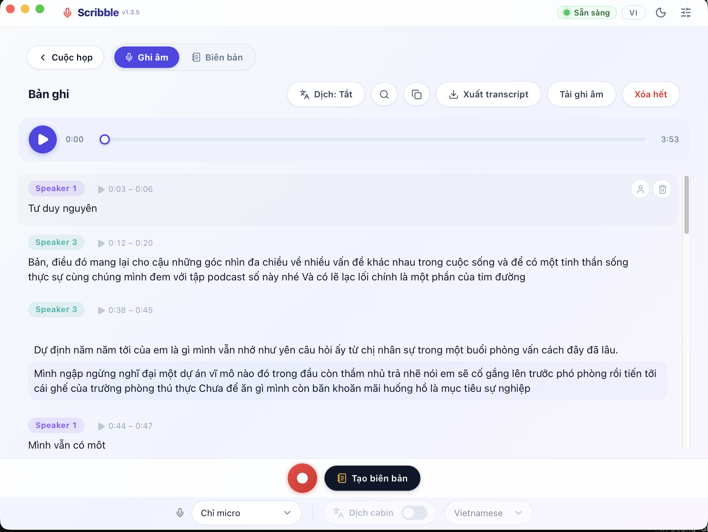
No cloud dependency. No subscription. Just powerful AI running on your machine.
Soniox streaming or on-device local models with sub-second latency. Words appear the moment they're spoken.
Pitch-based and voice feature diarization identifies who's speaking. Each voice auto-labeled in real-time.
Real-time cabin translation into 30+ languages. Translations stream below each transcript line.
One-click summaries: title, key points, action items, decisions, risks. Export as Markdown or Word.
Got existing mp3/m4a/mp4 recordings? Drop them in — automatic pipeline transcribes, diarizes, and generates minutes. Resumable across crashes.
Attach project briefs, agendas, or glossaries (.md/.txt) to a meeting — the AI uses them as context so minutes get names, terms, and decisions right.
Transcripts save incrementally to SQLite. Even if the app crashes, your meeting data stays safe.
Everything runs locally. API keys stored on your machine only. No data leaves without your consent.
Grab the installer for macOS, Windows, or Linux. One-click install, zero configuration.
Choose built-in Local models (free, offline) or enter your Soniox key in Settings.
Hit record — live transcription, speaker labels, and translation appear instantly.
Free and open-source. Available for macOS, Windows, and Linux.
Latest version: v1.3.5
First time installing? Check our Installation Guide below for platform-specific setup instructions.
Follow these steps to get Scribble running in under 5 minutes. Screenshots included for every step.
Get Scribble on your machine
Click the Download button in the section above to download the .dmg file. Find it in your Downloads folder.
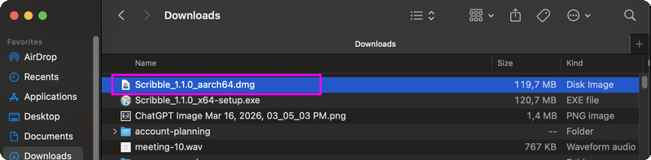
Double-click the .dmg file you just downloaded. macOS may show a "Scribble … Not Opened" warning because it's unsigned. Click "Done" for now — we'll fix this in the next step.
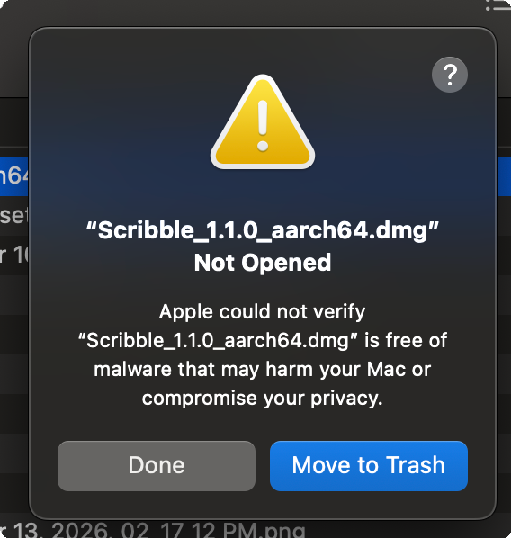
Open System Settings → Privacy & Security. Scroll down to find the Scribble message and click "Open Anyway" to allow the DMG to run.
xattr -cr ~/Downloads/Scribble*.dmg in Terminal
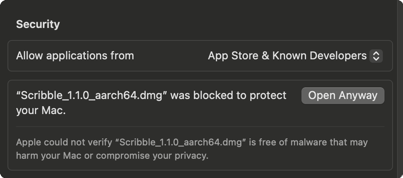
A confirmation dialog will appear asking to open the DMG. Click "Open Anyway" and enter your password to proceed.
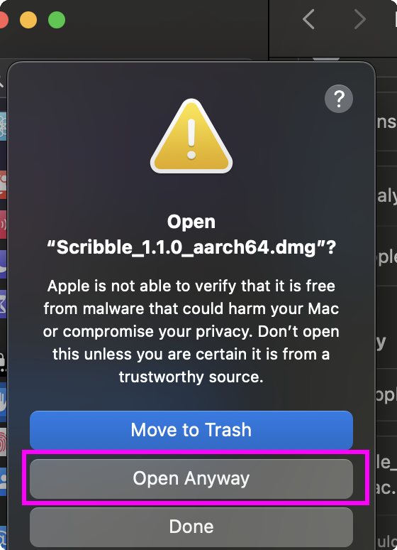
The DMG will open showing the Scribble app icon and an Applications folder shortcut. Drag the Scribble icon into Applications to install.
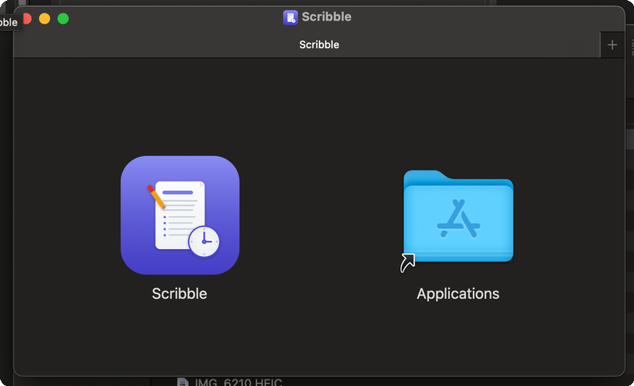
When you first launch Scribble from Applications, macOS shows another "Scribble Not Opened" warning. Click "Done" — we need to allow it through Privacy & Security again.
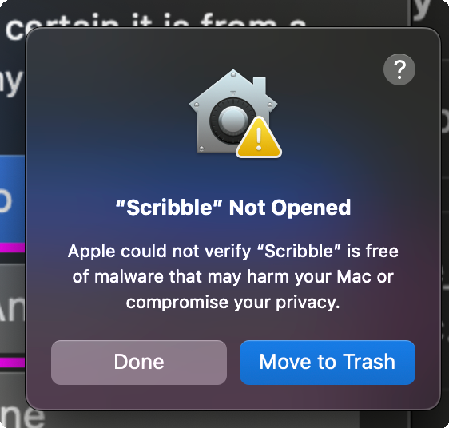
Go back to System Settings → Privacy & Security. You'll see the Scribble app has been blocked. Click "Open Anyway" once more.
xattr -cr /Applications/Scribble.app to skip this step
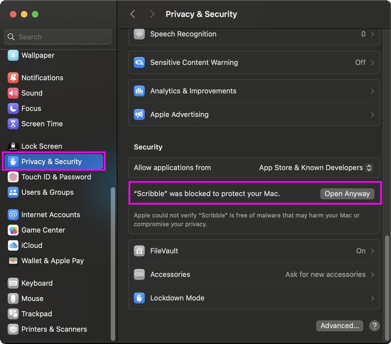
The Gatekeeper dialog appears one last time. Click "Open Anyway" and authenticate with your password or Touch ID.
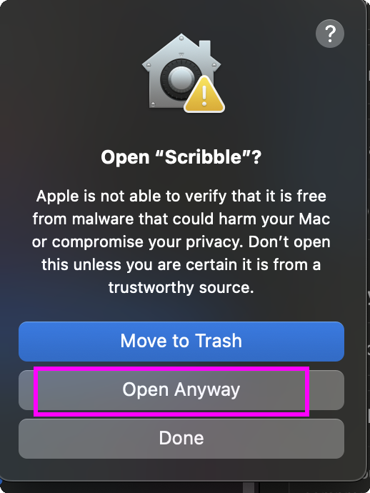
The app launches successfully. You'll see the main Scribble interface. Continue to Phase 2 for configuration.
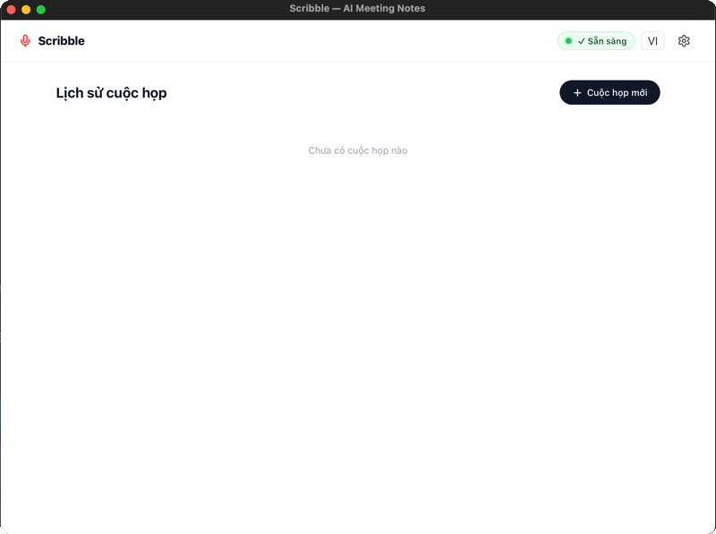
Click the Download button in the section above to download the .exe file. Your browser may show a warning that it’s not commonly downloaded — this is normal for new apps.
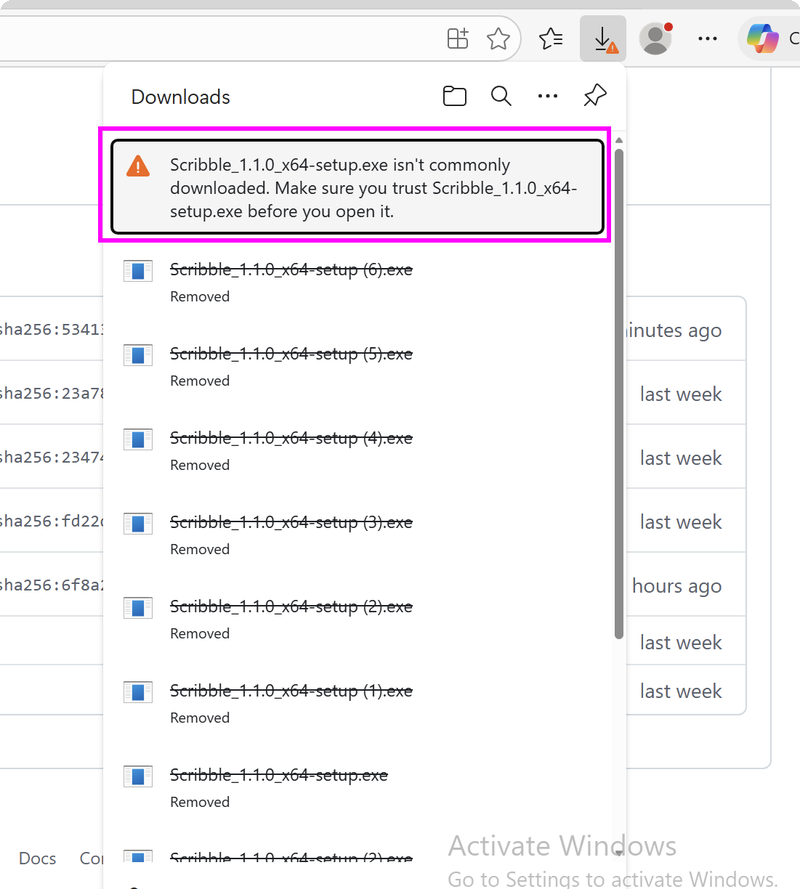
Click the three-dot menu (⋯) on the download warning bar. Select "Keep" from the dropdown to keep the file instead of deleting it.
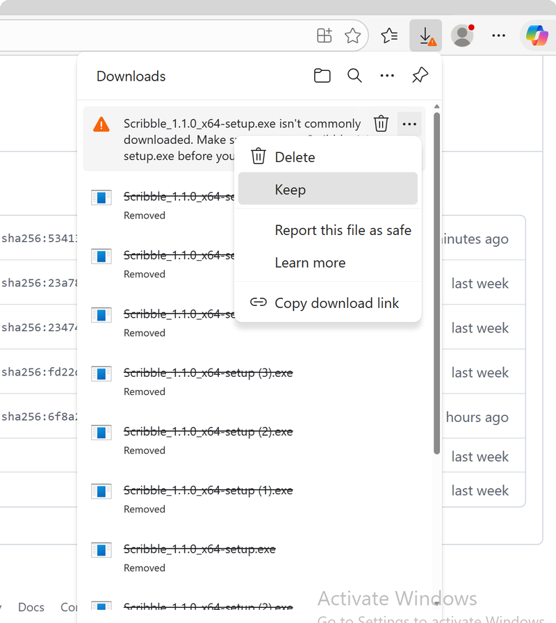
A second confirmation appears. Click "Keep anyway" to confirm saving the installer.
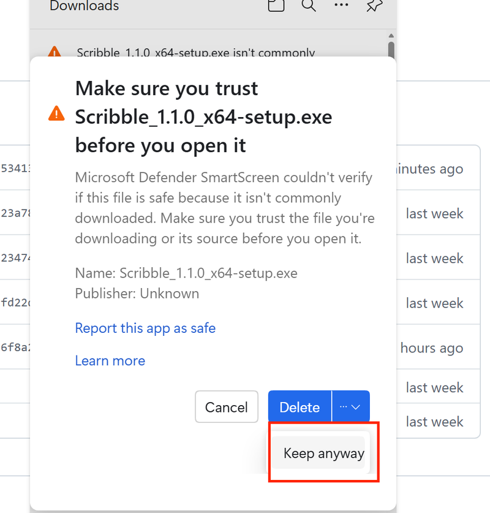
Go to your Downloads folder and double-click the Scribble_…_x64-setup.exe file you just downloaded to start the installation.
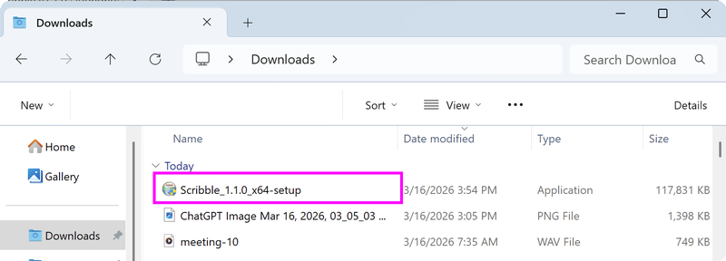
Windows Defender SmartScreen will show "This app might harm your device". Click "Show more ∨" to reveal the option to proceed.
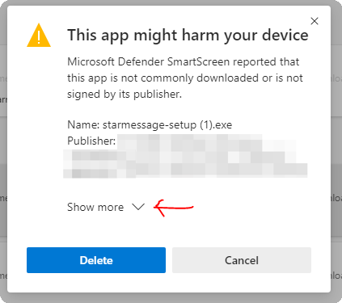
After clicking "Show more", the "Install anyway" button appears. Click it to proceed with the installation.
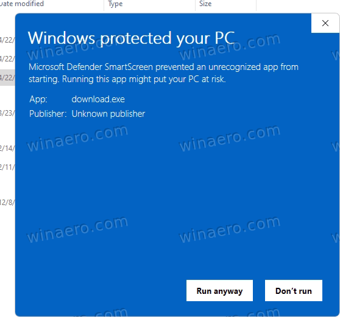
The installer wizard will guide you through the remaining steps. Choose your language, install location, and Scribble will be ready in seconds. Continue to Phase 2 for configuration.
Set up Speech-to-Text and AI Assistant
Launch Scribble, click the ⚙️ Settings icon in the top-right corner and select the Speech-to-Text tab. You can choose Local models (Zipformer 30M or Nemotron 0.6B) for 100% on-device offline transcription without internet, or choose Soniox for high-accuracy cloud STT.
Offline (Zipformer 30M / Nemotron 0.6B)
Soniox (optional API key)
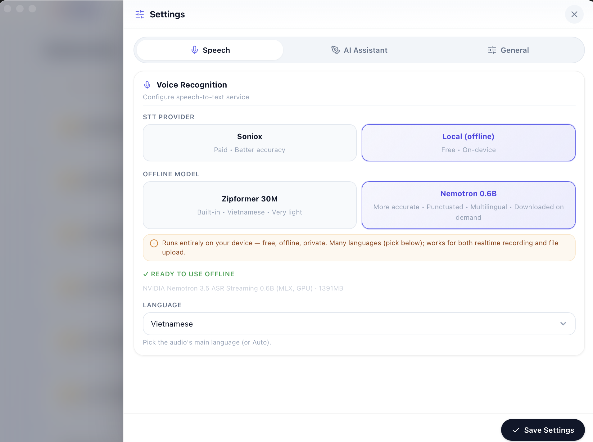
Switch to the AI Assistant tab to configure summary and minutes generation. Scribble supports all popular providers: OpenAI, DeepSeek, Google Gemini, Groq, Mistral, OpenRouter, or local models via Ollama / LM Studio. Select your provider and paste your API key.
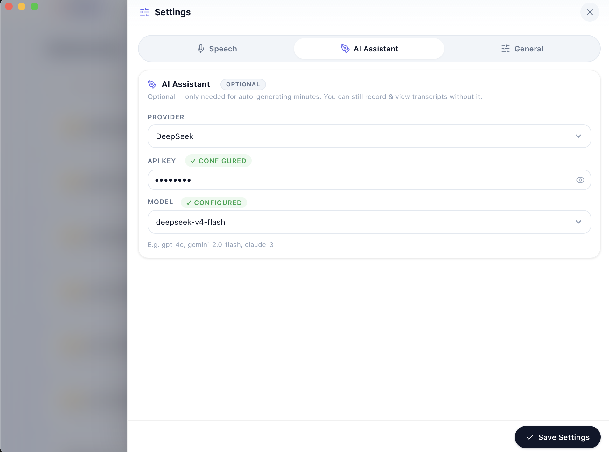
Grant system permissions and begin your first session
When you first click "Record", macOS will ask for Screen & System Audio Recording permission. Click "Open System Settings" to go directly to the permission panel.
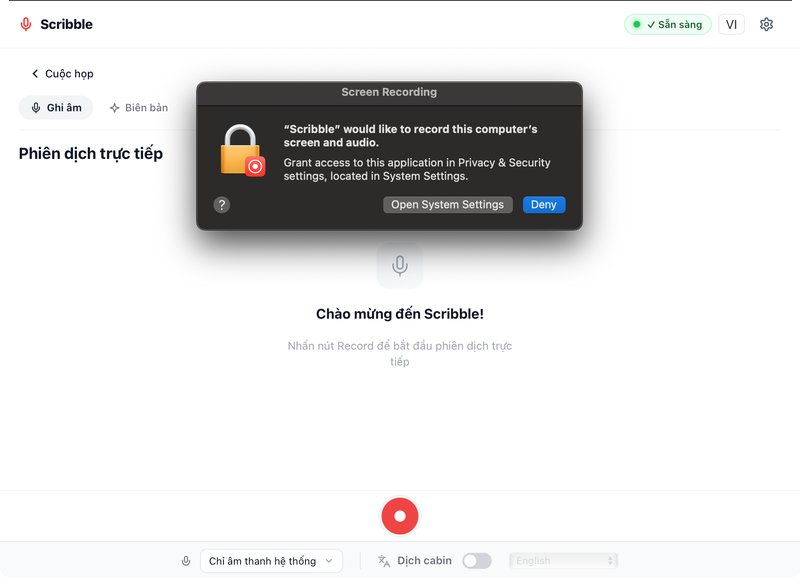
In System Settings → Privacy & Security → Screen & System Audio Recording, find Scribble in the list and toggle it ON. You may need to enter your password.
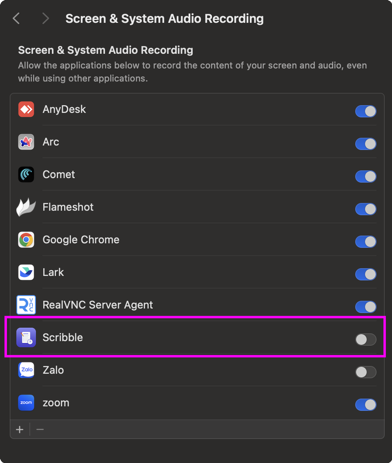
Create a new meeting, hit Record, and watch real-time transcription with speaker diarization appear instantly. Scribble identifies speakers automatically and streams the transcript live.
Yes. Scribble is 100% open source — you can inspect every line of code on GitHub. Security warnings appear because the app has not been signed with a commercial code signing certificate.
Scribble is an open-source Rust + Tauri desktop application. Security warnings appear solely because it has not been signed with an expensive commercial code signing certificate, and it is completely free of malware.
Not required. You can use Scribble completely free and offline with local models (Zipformer/Nemotron). For cloud STT, Soniox offers a free tier at soniox.com. For meeting minutes summaries, you can use your own keys from OpenAI, DeepSeek, Google Gemini, Groq, OpenRouter, or local models via Ollama.